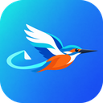

メモアシスタント今井泰斗が自分ひとりで使うために作った ToDo・メモ アプリです。一般向けには配布していません。
| できること | ToDo とメモを「仕事」「私」に分けて管理し、上にあるものほど優先度が高い順に並べます。PC（常駐の小さなバー）と Android で同じデータを使い、リマインドはどちらかの端末で確認すれば両方で止まります。 |
|---|---|
| アシスタント | Claude（Anthropic）を使ったアシスタントに「あとやること何だっけ？」「これ終わった」「来週火曜に車検の予約を覚えといて」と話しかけると、一覧を読み書きして答えます。 |
| Google 連携 | 本人が許可した場合に限り、Google カレンダーの予定を読んで答え、頼まれたときだけ予定を追加します。Gmail は検索と閲覧のみ（送信・削除はしません）、Google ドライブはファイルの検索と、このアプリ自身のバックアップの保存に使います。 |
| 利用者 | 開発者本人のみ |
| 連絡先 | GitHub @HirotoTDL |